全部笔记
服装
在 VRoid 里用底模贴图画自己的衣服
Syafire · 约 12.5 万次播放 · 2026-11-25
先看要画成的那套
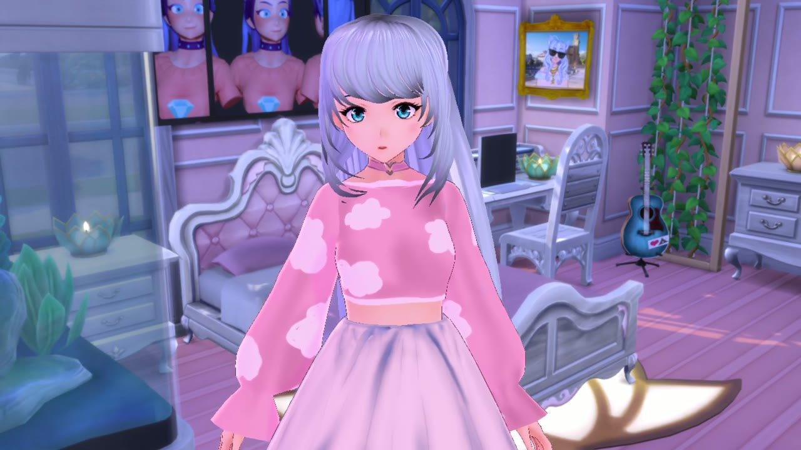
开场没有编辑器界面。看身上的短上衣：粉色底、浅色云朵，袖口收成喇叭形，下面是浅色裙，脖子上有一圈细项圈。
口播说这套不是从 Booth 下的，是用 VRoid Studio 自带的底模工具画出来的。后面进编辑器时，窗口标题是 Sytest* - VRoidStudio 0.11.1。星号是这一份还没保存。房间这一镜只展示结果，没有按钮。
到 Clothing Editor，选接近的 Tops
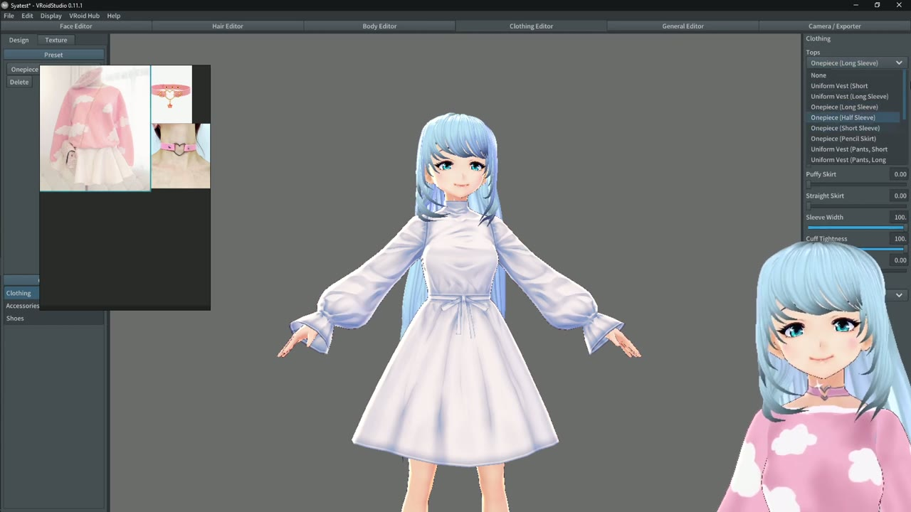
顶部是 Clothing Editor，左侧停在 Design。Preset 下面有 Delete，参考图盖住了名字后半，只露出 Onepiece。三张图是云朵毛衣、带吊坠的粉项圈、心形粉项圈。右侧 Clothing 里 Tops 的框写着 Onepiece (Long Sleeve)。展开的列表从上到下是 None、Uniform Vest (Short)、Uniform Vest (Long Sleeve)、Onepiece (Long Sleeve)、Onepiece (Half Sleeve)、Onepiece (Short Sleeve)、Onepiece (Pencil Skirt)，再往下两行裤装的 Uniform Vest 被面板右缘裁掉。蓝底停在 Onepiece (Half Sleeve)。下面能读到的是 Puffy Skirt 0.00、Straight Skirt 0.00、Sleeve Width 100.、Cuff Tightness 100.，再下一条被头像挡住，数值是 0.00。左下角分类是 Clothing、Accessories、Shoes。
从角色编辑进 Clothing Editor，左侧分类停在 Clothing。口播要选和目标衣服最接近的底模，这里选的是 Onepiece (Long Sleeve)：身上是白长袖、腰上有带子的连衣裙。列表里的蓝底是鼠标扫过 Onepiece (Half Sleeve)，框里和身上都还是长袖那件，没有换成半袖。这些裙子滑杆停在 0.00，袖子两条停在 100.，这一段没有拖它们。口播还提到短袖、把裙子塞进腰里、裤子和大衣。画面上往下选到 Long Coat (Stand Away) 时，人会换成盖到脚踝的白大衣，右侧改成 Volume，以及 Collar Crease、Collar Wavy、Collar Tip Tight、Collar Width、Collar Tight、Collar High、Collar Low，读到的都是 0.00。教程没有用那件大衣，还是回到这件长袖连衣裙。
点 Texture，打开这件衣服的贴图
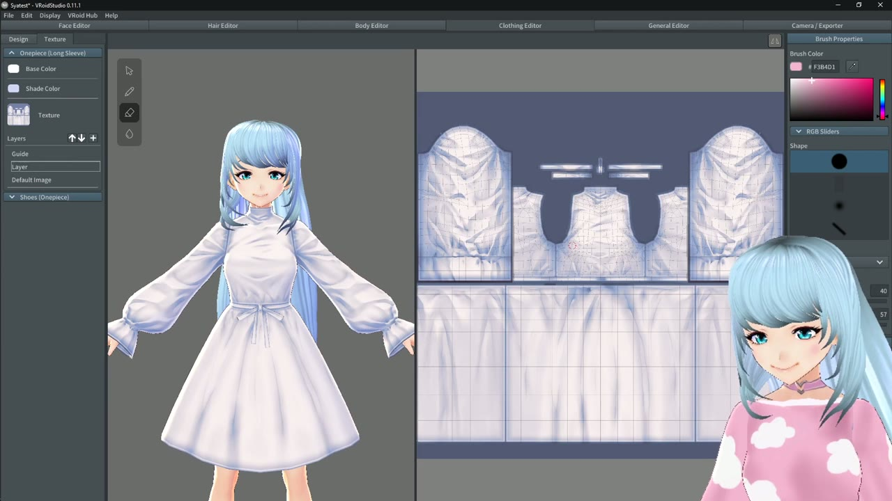
Design 旁边的 Texture 已打开。左侧树是 Onepiece (Long Sleeve)，下面有 Base Color、Shade Color，Texture 被选中。Layers 右边是上移、下移和加号。图层是 Guide、Layer、Default Image，Default Image 有选中框。再下面是收起的 Shoes (Onepiece)。竖条工具由上到下是箭头、铅笔、橡皮、水滴，橡皮是深色。中间是白裙子的 UV。右侧 Brush Properties 里 Brush Color 的色号是 #F3B4D1，旁边有一支吸管。下面是收起的 RGB Sliders，Shape 里有大圆、小圆点和斜线。
在 Design 旁边点 Texture。点之前如果把参考图收起来，Preset 下拉完整写着 Onepiece (Edited)，下面有 Delete。进来之后画的是这件 Onepiece (Long Sleeve) 的 Texture，不是 Base Color 或 Shade Color。Default Image 是当前图层。口播说竖条上有画笔、橡皮和 blur；水滴形那一个没有文字，口播把它叫 blur，这一镜没有点开它。口播还说用键盘的 [ 把笔刷变大、] 把笔刷变小。画面上能看到笔刷圆圈变大变小，但没有标出这两个键。
用橡皮把布擦掉，改出露肩
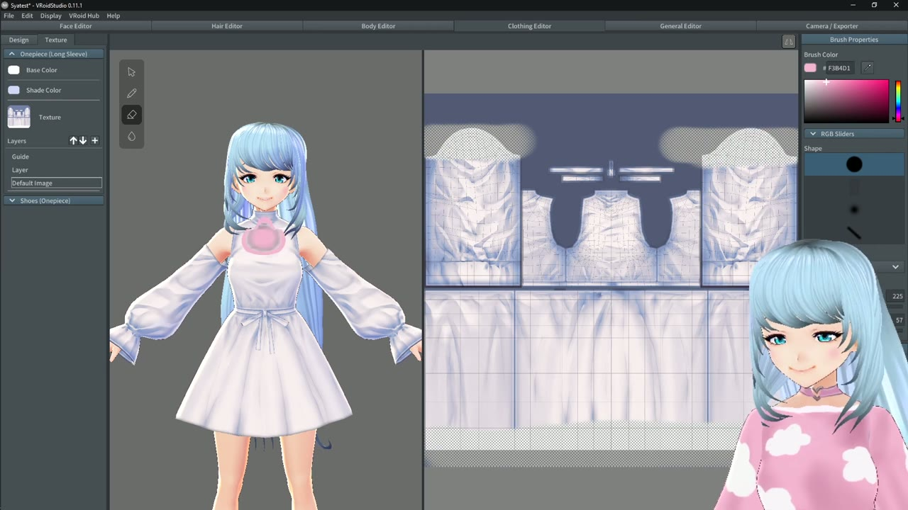
橡皮仍是深色选中。模型肩膀和锁骨处的白布没了，胸口有一圈粉色笔刷。中间 UV 上方三块变成灰白格子，下面裙摆还是原来的白布。右下角头像挡住了 Width 和 Opacity 的名字，只露出 225 和 57，不要把这两个数字安到滑杆上。
在 Default Image 上用橡皮直接擦。擦掉的地方 UV 变成格子，表示贴图透明，底下的皮肤会露出来。所以露肩不是去换另一件 Tops，网格还是这件长袖连衣裙，只是肩上的布被擦没了。口播说裙子也可以这样擦短，想多短就擦到多短。这一镜裙摆还在，先改的是肩和胸口。
右键 Default Image，先看复制和导出
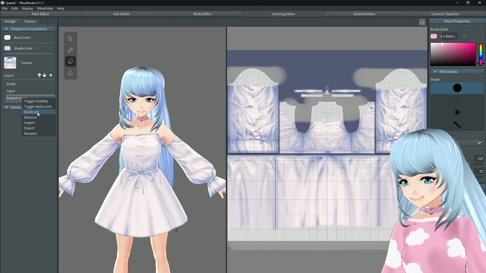
菜单盖住图层名。从上到下是 Toggle Visibility、Toggle Alpha Lock、Duplicate、Remove、Import、Export、Rename。光标在 Duplicate 上，这一行是蓝底。模型仍是擦过肩的白裙子。
在 Default Image 上右键。口播建议先点 Duplicate，再去改原来的图层，免得改坏。这一镜只是停在 Duplicate 上，图层列表里没有多出新的一行。同一份菜单里有 Export。接着会弹出保存窗口，地址在 Desktop，文件名框里是 layer，类型是 (*.png)，下面是 Save 和 Cancel，光标停在 Cancel，没有按 Save。口播说如果想用更多工具，可以把图拿到 Paint Tool SAI 或 Photoshop；又说这套衣服自己是在 VRoid 里画完的。画面没有打开那两个软件。
换成铅笔，在 UV 上铺粉色
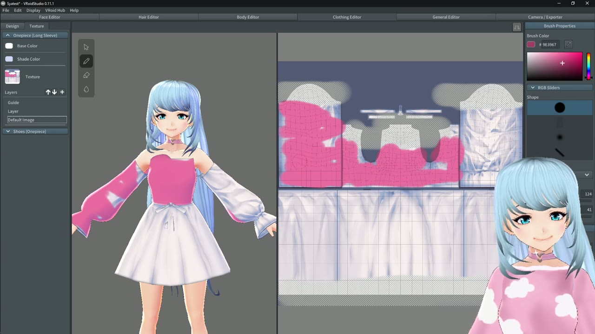
竖条第二个铅笔是深色选中。Brush Color 的色号是 #9E3967。UV 上半块有粉色笔触，擦掉的地方仍是格子，下半块裙摆还是白布。模型上身是粉色，画面左侧那只袖子也涂上了，另一只还是白的。头像旁边露出 124 和 41，名字被挡住。
点铅笔，在右侧色板里选一个粉色，色号会写在 Brush Color 旁边。笔是画在中间的 UV 上，左边的人会跟着变。袖子和上身是分开的 UV 块，所以要一块一块涂，这一镜还有一只袖子是白的。色号右边的吸管图标可以吸已经涂上的颜色。口播说吸完之后按 Escape，会回到上一个工具；画面没有停在吸管光标上。口播还说这里能改笔刷种类、宽度和透明度，用来做深浅。这一镜宽度和透明度的名字被右下角头像挡住了。
照着参考图，把上身画成云朵短上衣
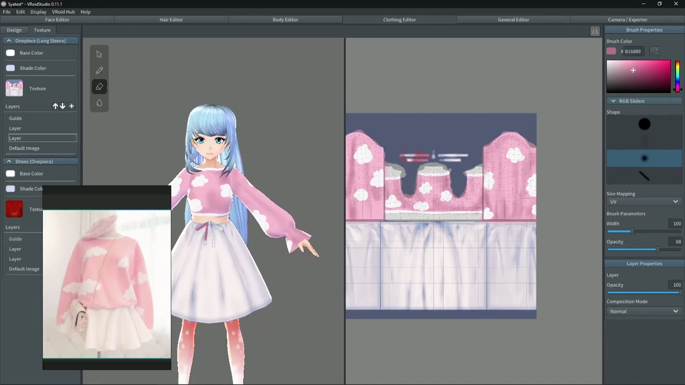
左侧浮着云朵毛衣的参考图。模型腰以上是粉色短上衣，上面有白云，腰和裙子之间露出皮肤，裙摆仍是白的，小腿是粉色并带浅色小花纹。UV 上半是云朵，下半还是原来的白裙布料。Brush Color 是 #B16889。Shape 中间的小圆点是蓝底。Size Mapping 是 UV。Brush Parameters 里 Width 是 100，Opacity 是 68。Layer Properties 里 Opacity 是 100，Composition Mode 是 Normal。
口播说到这里就切成速绘，不再逐步讲。对照左边那张毛衣，把上身和袖子涂成粉色再点上白云。腰上的布被擦掉之后，一件连衣长裙会看起来变成短上衣加裙子，中间露出皮肤。裙长不是靠 Skirt Length 拉出来的，白裙还在下面那块 UV 上。小圆点适合点云朵。Width 管粗细，这一镜是 100；上面的 Opacity 是 68，颜色会透一点。图层自己的 Opacity 仍是 100，混合模式是 Normal。RGB Sliders 一直是收起的，没有展开。
项圈画在 Body 的贴图上
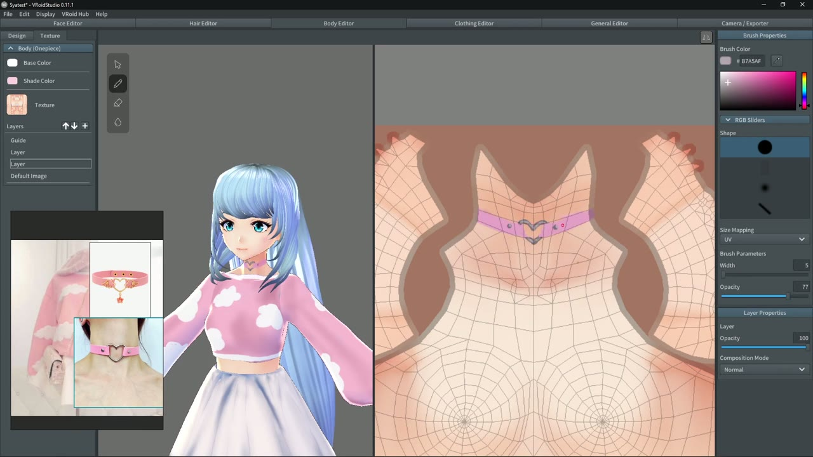
左侧树改成 Body (Onepiece)，Texture 被选中，色块是肉色。图层是 Guide、两个都叫 Layer 的行，以及 Default Image。左边浮着两张项圈参考图。中间 UV 放大到脖子和胸口，项圈是粉色带子，中间有心形，旁边有小点。铅笔是深色选中。Brush Color 是 #B7A5AF。Shape 的大圆是蓝底。Width 是 5，Opacity 是 77。图层 Opacity 是 100，Composition Mode 是 Normal。人的脖子上已经能看到这条项圈。
脖子是身体，不是那件 Onepiece 的布，所以项圈要换到 Body (Onepiece) 的 Texture 上画。把 UV 放大到脖子那一圈，Width 收到 5，用细线照着参考图描带子和心形。衣服上的云朵还在，说明刚才的服装贴图没有被这层盖掉。两个都叫 Layer 的行是列表里已经有的，这一镜没有演示它们是怎么加出来的。
画完仍叫 Onepiece (Long Sleeve)
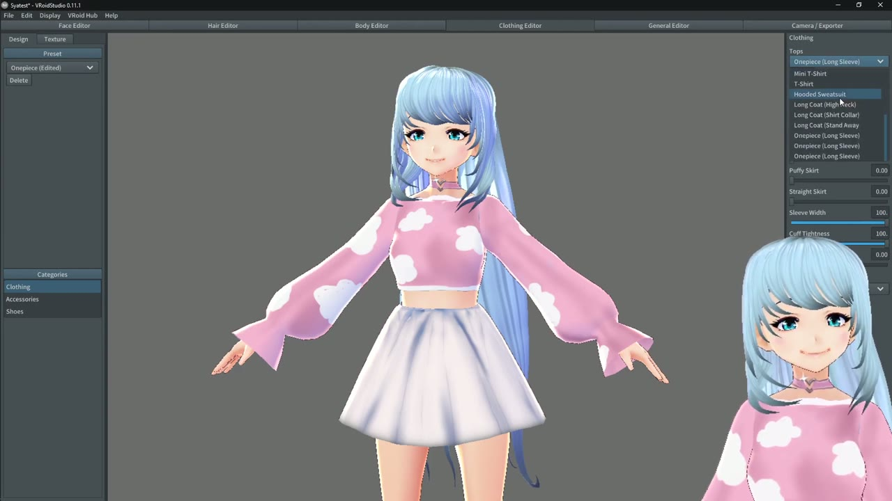
回到 Design。左侧 Preset 下拉是 Onepiece (Edited)，下面有 Delete。右侧 Tops 的框仍是 Onepiece (Long Sleeve)。列表里能看到 Mini T-Shirt、T-Shirt、Hooded Sweatsuit、Long Coat (High Neck)、Long Coat (Shirt Collar)、Long Coat (Stand Away)，最底下是三条一模一样的 Onepiece (Long Sleeve)。光标停在 Hooded Sweatsuit 上。Puffy Skirt 和 Straight Skirt 是 0.00，Sleeve Width 和 Cuff Tightness 是 100.。
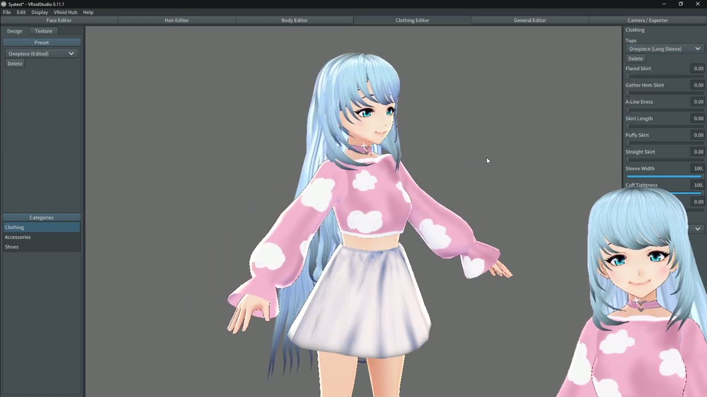
下拉收起后，Tops 还是 Onepiece (Long Sleeve)，下面有 Delete。滑杆从上到下是 Flared Skirt 0.00、Gather Hem Skirt 0.00、A-Line Dress 0.00、Skirt Length 0.00、Puffy Skirt 0.00、Straight Skirt 0.00、Sleeve Width 100.、Cuff Tightness 100.。最后一条的名字被头像挡住，数值是 0.00。身上是云朵短上衣、白裙和项圈。
口播说新画的衣服会自动留在 Tops 里，滚到最底下就能找到，不用担心它消失。因为没有改名，它还叫 Onepiece (Long Sleeve)。画面上最底下并排三条同名，口播说其中一条是刚画完的，另一条是刚才用来试工具的。光标停在 Hooded Sweatsuit 只是悬停，人身上仍是云朵上衣。收起列表之后，Skirt Length 和其他裙子滑杆都还是 0.00，短上衣的空腰是贴图擦出来的，不是这些滑杆拉出来的。
从 Camera / Exporter 导出
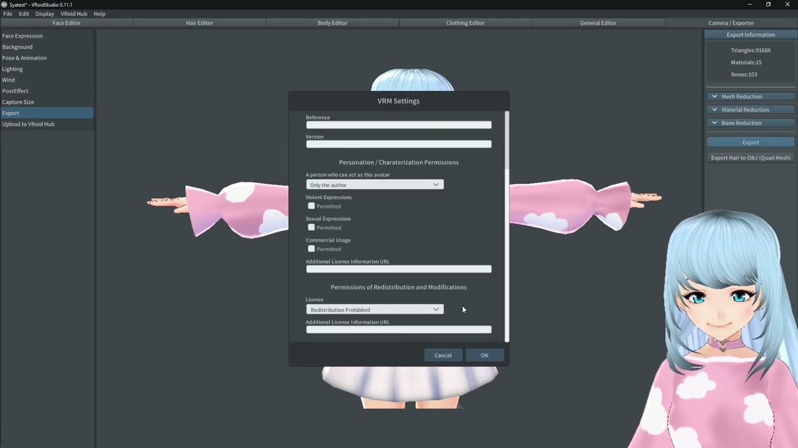
顶部是 Camera / Exporter。左侧 Export 为蓝底，上面还有 Face Expression、Background、Pose & Animation、Lighting、Wind、PostEffect、Capture Size，下面是 Upload to VRoid Hub。右侧 Export Information 写着 Triangles:91686、Materials:15、Bones:103。下面三项 Mesh Reduction、Material Reduction、Bone Reduction 都是收起的。再下面是 Export，以及 Export Hair to OBJ (Quad Mesh)。中间窗口标题是 VRM Settings。Reference 和 Version 是空的。Personation / Characterization Permissions 里，A person who can act as this avatar 选的是 Only the author。Violent Expressions、Sexual Expressions、Commercial Usage 下面的 Permitted 都没勾。License 是 Redistribution Prohibited，光标在这个下拉旁边。两个 Additional License Information URL 都是空的。底部是 Cancel 和 OK。
画完后点顶部的 Camera / Exporter，左侧点 Export，再点右侧那颗 Export，不要点下面的 Export Hair to OBJ (Quad Mesh)。点下去之后弹出 VRM Settings。这一镜没有改这些许可，也没有按 OK。后面窗口关掉，人回到 T 字站姿，没有再出现选择保存位置的窗口。口播说导出之后可以放进 3tene 或 VSeeFace，画面里没有打开这两个软件。三个减面分组也没有展开。